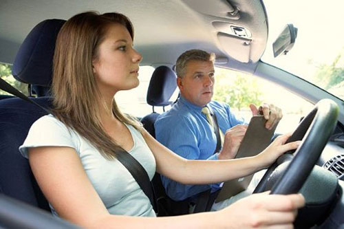
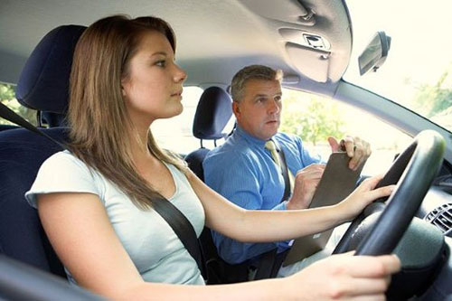

Obtención / Renovación / Canje del carnet de conducir:
Le realizamos el reconocimiento médico y emitimos al momento el certificado para la obtención, renovación o canje del carnet de conducir, sin necesidad de ir a tráfico. El reconocimiento es muy sencillo, se hace un examen médico-oftalmolgico y un psicotécnico para verificar que la persona es apta tanto a nivel físico como psíquico para conducir
- GESTIÓN INTEGRAL con la DGT vía online: TELEMÁTICA, INSTANTNEA Y GRATUITA.
- AUTORIZACIÓN PROVISIONAL DURANTE 3 MESES EN EL MOMENTO:Entrega en el momento de una autorización provisional que le permite circular durante tres meses hasta recibir en su domicilio el carnet definitivo.
- SIN FOTO: realizamos las fotos gratuitamente.

Documentación necesaria:
- Carnet de identidad original (DNI, NIE) en vigor
- Carnet de conducir antiguo (en caso de renovación).
¿Qué países tienen un convenido con España para realizar el canje del carnet de conducir?
Puede ver en el siguiente enlace de la web de la DGT un listado de los países que tienen convenio de canje del carnet de conducir con España: LOS PAÍSES SON